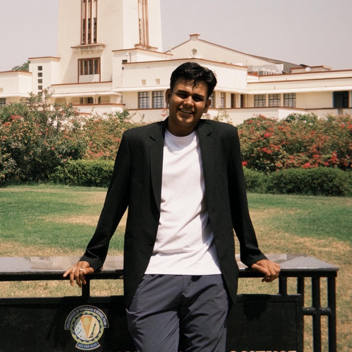

I turn product data into decisions teams can act on.
I'm Vinimesh Yadav, a dual-degree student at BITS Pilani (M.Sc. Economics and B.E. Civil). I work on product analytics, growth and AI-driven automation.

BITS Pilani · Graduating May 2027
Case studies, from problem to plan.
Read the data.
Then decide.
01. Start with the numbers
Find where users drop off or slow down in the funnel before I suggest any feature.
02. Find the root cause
Separate the symptom from the cause. On Mars, the issue was market saturation, not the product.
03. Prioritise by impact
Rank options by user value, business value, effort and risk. Fix the expensive problems first.
04. Automate the repeat work
Use Claude agents, MCPs and n8n so that the team spends time on decisions, not on reports.
Two years at CUBE, close to the product.
May 2024 – present
Product Management Intern · CUBE
May 2026 – Present- Found trends in product data that improved onboarding conversion by 15%.
- Automated recurring product analytics workflows with Claude Skills, Agents and MCPs.
- Built SQL, Tableau and Vercel dashboards to track performance.
Founder's Office Intern · CUBE
Oct 2024 – Oct 2025- Used Claude Skills to summarise tender data and automate filings, saving 8–10 hours per tender each week.
- Ran Excel and CRM analysis to support the founder's key decisions.
- Ran email campaigns that increased user engagement by about 30%.
Growth and Strategy Intern · Techture Structures
May 2024 – Jul 2024- Analysed acquisition, retention and funnel metrics.
- Managed CRM workflows and email campaigns.
- Did market research and competitor analysis for partnerships.
Outcomes, in numbers.
Economics training. A builder's habits.
I study Economics and Civil Engineering at BITS Pilani. Economics taught me to think about incentives and trade-offs. Engineering taught me to think in systems.
I also founded @behind_the_voices_ and grew it to 190K+ followers with daily content. That work taught me to read audience feedback fast and change course. I bring the same habit to product work.
Looking for a PM who works from the data?
I'm open to Product Management roles and internships where analytics, user insight and automation matter.